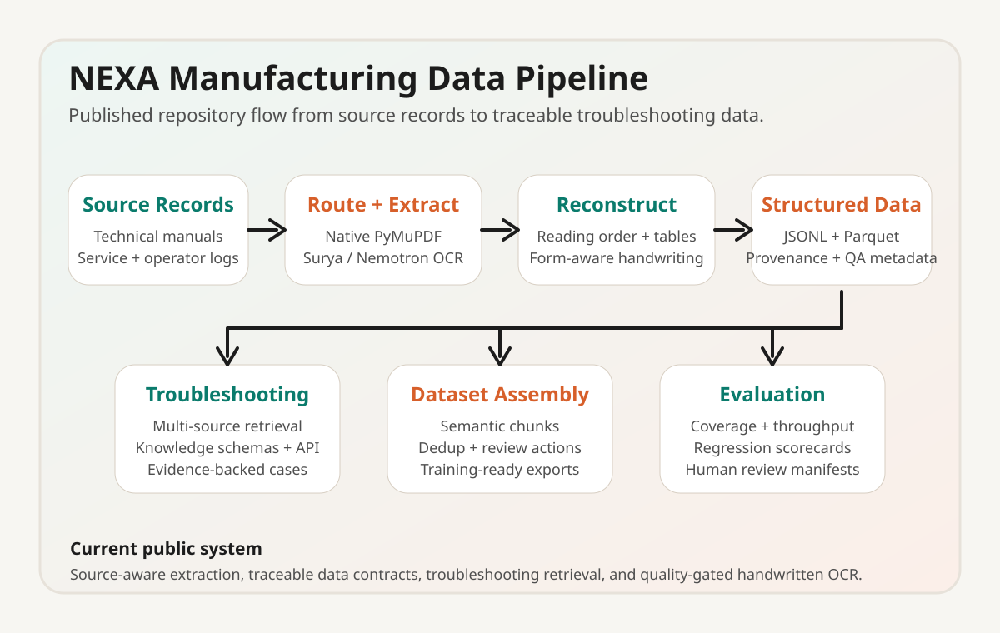

NEXA: Small Language Models for Manufacturing Process Design
A research effort at Carnegie Mellon focused on compact expert-agent systems for manufacturing process design, document understanding, and retrieval-ready knowledge extraction from technical process documentation.
Overview
NEXA stands for Network of Experts and Agents. The core idea is to use smaller, more efficient language models as specialized technical experts and runtime agents instead of relying on one large general-purpose model. In the slide deck, the system is framed as a unified path from user objectives to validated process design decisions, with policy constraints, retrieval, fine-tuning, prompt optimization, and runtime feedback all working together.
In practice, the TurboOCR branch translates that research framing into document intelligence infrastructure for manufacturing knowledge. The branch is focused on extracting clean, structured text from process manuals, sputtering references, and operator-facing documentation so that downstream expert models and RAG systems can reason over trustworthy manufacturing content instead of brittle raw OCR output.
Repository: TurboOCR branch on GitHub.
Research Architecture

What This Branch Implements
The repository is organized around four main working areas: an OCR/VLM document pipeline, an operator-note ingestion pipeline, a troubleshooting and retrieval stack, and evaluation tools for building and checking fine-tuning datasets. The active TurboOCR work adds an optional local Docker-based OCR service for A/B testing against the lighter PyMuPDF and Surya-based paths.
ocr_vlm_pipeline/handles PDF ingestion, figure and equation extraction, chunking, and chunk-quality scoring.turbo_ocr_vlm_pipeline/mirrors that flow with TurboOCR as an OCR backend for scanned or image-heavy documents.operator_note_pipeline/ingests handwritten or semi-structured shop-floor notes and ties them to schema-aware outputs.troubleshooting/provides retrieval, copilot logic, API serving, and source-ingestion helpers for manufacturing support tasks.eval_tools/packages instruction-tuning datasets, synthetic records, and regression checks for iterative research work.
Why It Matters
The manufacturing setting here is a good example of where compact models and careful runtime design matter more than raw parameter count. Technical documentation mixes dense native text, tables, figures, equations, scanned pages, and low-value front matter. If those sources are ingested poorly, downstream process-design or troubleshooting agents inherit bad context. This branch treats document quality as a first-class research problem by routing pages, preserving provenance, and attaching review metadata to every chunk.
TurboOCR Branch Benchmark Snapshot
| Output Path | Score | Chunks | Flags | Speed | Takeaway |
|---|---|---|---|---|---|
| Native semantic chunking | 94.1 / 100 | 154 | 26 | ~130.19 pages/s | Fast baseline for text-native manuals |
| Hybrid native + OCR routing | 98.3 / 100 | 626 | 6 | ~0.48 pages/s | Higher readiness, but currently too slow |
Current Research Direction
The current tradeoff is clear: hybrid routing produces cleaner database-ready output on the benchmark PVD manual, but the OCR overhead is still too expensive for routine use on native-text documents. The next phase is to tighten page-level routing so sparse pages, boilerplate, and front matter stay on the native path while scanned or image-heavy pages can still benefit from OCR. That makes the project both a systems problem and an AI-quality problem, which is exactly the kind of research direction I’m interested in.
What I Contributed
- Worked on the research framing around expert-agent manufacturing workflows, document trust, and model/runtime tradeoffs for small language models.
- Supported the document pipeline direction for manufacturing references, especially around extraction quality, chunk structure, and downstream RAG usefulness.
- Helped shape how technical process documentation can become structured, reviewable knowledge instead of one-off OCR output.